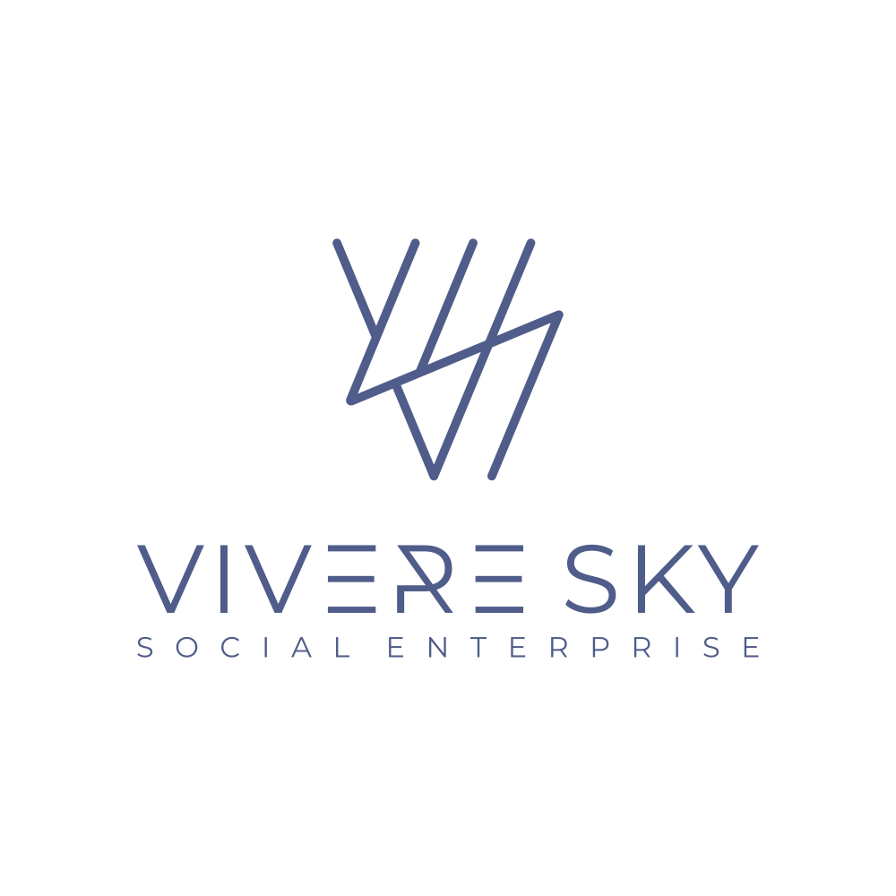

Eng
記憶地圖
「記憶地圖」是一個以感官探索為主題的城市漫遊工作坊，透過聲音漫步體驗。
工作坊鼓勵參加者運用五感——聽覺、視覺、嗅覺、觸覺與情感記憶——觀察日常生活中容易被忽略的細節，並將所感所見轉化為創意作品。
記憶地圖_陳一平
記憶地圖_吳卓彥
記憶地圖_林曉暉
記憶地圖_李文皓
記憶地圖_鄭至堯
聲音漫步紀錄
影片
Magic Inclusive Project Pilot Award Scheme
贊助機構
贊助管理機構
聯合主辦機構

支持機構
長沙灣天主教英文中學
特別鳴謝
林妙玲教授
黎仲民
藝術家
趙海盈
彭俊富
黃美宝
楊倩嵐
參與者
陳一平
吳卓彥
林曉暉
李文皓
鄭至堯
×
←
→